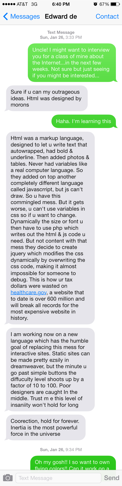
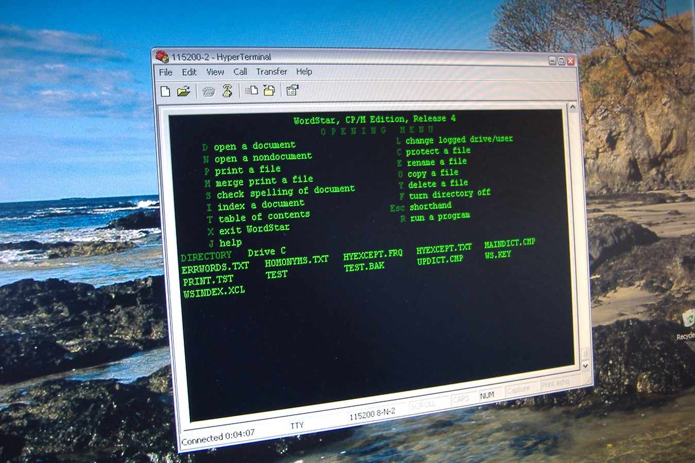
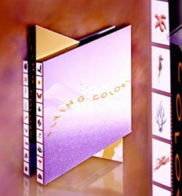
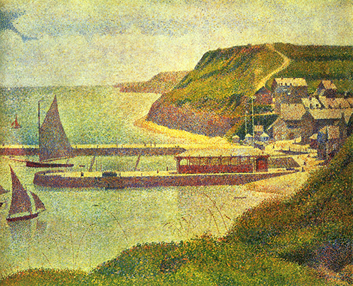
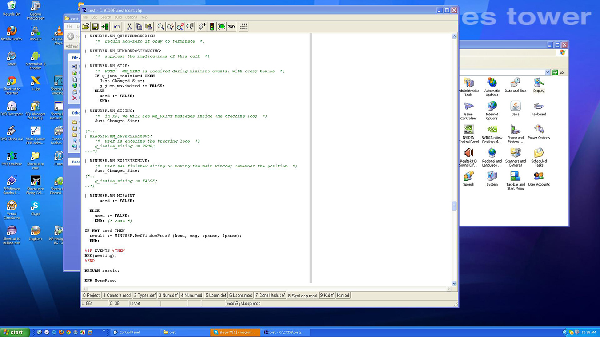

Edward de Jong is a computer programmer in Oakland, CA. He has been working with computers since the early era of digital computing in the late 1960s. In highschool he and two of his nerdy cohorts were invited to fiddle with the state of the art computers at the Jet Propulsion Lab in Pasadena, CA, but one of them hacked the system so they were un-invited back. He founded a software company called Magic Mouse Productions in 1991, from which he has released numerous educational and entertainment software for children and adults such as Flying Colors, Discus and Tamagotchi Sketch, which was only released in Japan.
For the past two decades, he has been working on a new system called Beads to replace HTML, which he believes is an incredibly unsuitable base off of which to run the entire internet.

talkingdigital123 has shared contact details with Edward de Jong.
CONVERSATION
Edward De Jong: I am here at your electronic beck and call. Now we find out how fast a typist you are.
talkingdigital123: wonderful. let us beginok. I was born at an early age
First saw a computer on TV. in shows that had a technological component, like Voyage to the Bottom of the Sea,

and Lost in Space, computers were always shown having lots of flashing lights, and it was a common trope in Hollywood to show tape drives spinning as indictors of computers thinking.
my first experience on a computer was Blair high school, a public school that received a donated computer from IBM, an obsolete punch card computer called the IBM 1620
 it had cool lights, and could calculate whopping 100 instructions per second.
it was so slow you could see it thinking, but it had a hard drive and typewriter on the top that could type 1 character per second.
it had cool lights, and could calculate whopping 100 instructions per second.
it was so slow you could see it thinking, but it had a hard drive and typewriter on the top that could type 1 character per second.
computers can do about a billion instructions per second now about 10 million times faster and a million times cheaper no other product has changed it price like a computer
what did you type on that first computer?I and my gang of computer fiends, we made games. I programmed a 3D ticktacktoe game that supposedly learned. and then I made a galactic warfare game, where you could enslave planets for resources. that was pretty rudimentary. we only had 2 switches on the front of the computer so the only way to input things was by feeding in punch cards. not really interactive. I didn't see a graphics screen for a while. they were very fancy in those days.
computers at that point were just about reading data, and printing out reports.
gaming as we know it didn’t exist until personal computers came out, like the Atari and Apple computers.
mainframe and minicomputers were all about business, science, and military.
I did some hacking though. I wrote a program that would be running, pretending to read your card deck in, it read it slowly like it was thinking about it. then would think furiously for a while, then stop abruptly and put up a red light warning you it crashed. I played this prank on my teacher who was all upset her program didn’t work, but stopped hacking because ii felt sorry for this woman who didn’t have a clue really.
I taught myself programming by getting a book at the library on Fortran, one of the earliest languages. all of us were self-taught
we loved that machine. it was super fun
that level of computer cost about 150,000 new at the time.
then I moved onto Jet Propulsion Lab

and later Caltech. There were 3 of us super sharp kids given passes to JPL. we enjoyed using JPL's Univac system, but one of my colleagues hacked their system, cancelled jobs of workers and got us kicked out. probably just sent some commands to cancel a job remotely.
so I went to cal tech to finish up my senior year of HS and there I learned PL/1 on an IBM 370 mainframe. It was the state of the art IBM machine, very expensive, probably about 5 million
at Caltech I made a program that drew mazes on paper., and worked on computer-aided cryptography.
5:33 AM] what is that?
the kind of thing the NSA does all day long.
having the computer help you solve a substitution code cipher, like they had in the Saturday review, a magazine my mom used to subscribe to. It had a cryptogram each month
the kind of code where ALEX becomes rTZM
not a game. breaking secret codes then off to college. I foolishly picked the college with the most computers, MIT, thinking I had the best chance of being around good computers. didn’t seem to pay attention to the 10:1 boy: girl ratio. what an ass.
do you have images of any of these early games you made?I foolishly threw out all my old punch card decks. punch cards were very embarrassing after a while, it dated you as an old fogey
9:16 AM] I see. can you tell me a bit more about Jet Propulsion Laboratory. Why was this place so significant at the time?
JPL was and is in charge of all unmanned space exploration for NASA. It is affiliated with Caltech. It has some very bright people, and they do great work on very little money. I met a guy there that thought like a computer. He was an ultra-nerd. If you asked him to subtract 3 from 10, he would convert 10 to twos-complement form, and add. anyway I was at their computer center on Christmas day once, I was the only person there other than the operator (in those days you had to have a full time person tending to the machines, to feed paper into the printers), and someone was printing out orbit calculations.
they had printed 6 boxes of paper, so the equivalent of maybe 5000 pages of pure numbers, trying to calculate the position of some body in space over time. so I saw the scientific use of computers, pure calculations. 1972 my senior year in HS. I wanted to work on space exploration or robots, but the year I went to college, they stopped the Apollo project due to lack of interest (moon gets really boring fast. absolutely dead, and all the rocks look alike, all gray). and robots still haven’t happened robots are not moving along as fast as I had expected. too many science fiction books and movies, where it seemed like robots were the first thing we would make. it looks like the last thing we are going to get is some housecleaning help, roomba doesn't count to me.
Roomba?Cat in a shark costume chases a duck while riding a roomba, a robotic floor sweeper
oh!worth 5 million views. it is strangely entertaining a lot of videos showing pets on roombas. a whole genre of movie now
Can you tell me about some of the programs you designed in and/or out of school? Like Flying Colors.
while in college I worked on a simulation of an MHD power plant, a weird kind of power plant that they still don’t’ make. And then I worked on software tools for a professor to help teach computer science. Disgusted with being underpaid (MIT had an actual written policy called a Maximum wage for undergrads!, the bastards!) I then worked for TMI systems Corp that made a stock portfolio management system. I designed reports for fund managers at the World Bank, UMW pension fund, and Chase Manhattan’s portfolio, the largest portfolios in the world at the time. then I worked for strategic planning associates and helped build a decision support system, kind of like a spreadsheet for executives, that allowed them to keep track of all their sub-companies easily then I left Boston and returned to California where I became a general-purpose consultant. eventually I copied WordStar, a popular word processor, sold it for a ton of money, and then invented Flying Colors after my body adventures game looked doomed. I was working on an anatomy teaching game, and interviewed the store owners and found out that they were not going to buy it no matter what.


you copied WordStar?
so salvaged the body mapping subsystem (all that I had completed), and turned it into a painting program for kids.
what is WordStar?
yes I cloned the product. It was written in assembler on old computers, and they desperately needed it to be rewritten. I didn’t know that, I just copied it to learn how to do it. I programmed it at night using a mainframe computer, and dial up model with a terminal. the terminal could only transfer data at 2400 baud, which is 240 characters per second. incredibly slow networking back in those days by comparison DSL is 300,000 bytes per second (vers 240) my Comcast connection is 5,000,000 per second so it was like an early Microsoft Word yes it was a very good product. It was eventually eclipsed by WordPerfect, then everyone was wiped out by MS Word, which to this day dominates except in desktop publishing which used to be quark now indesign
so how did you turn the anatomy game into Flying Colors?I had built a system for drawing the arteries and veins. and laying out the routes for the little spaceship to follow, and saw that KidPix was a huge hit, and thought the company that made kIdpix would buy TeenPix, which was my code name for the project.
little did I know that the asshole Harry wilker at Broderbund would be so utterly stupid as to tell me to my face that teenagers don’t buy software so they weren’t going to buy it.
boy was he wrong. Xbox, playsation, are billion dollar industries, fueled entirely by teenagers


skip ahead a few decades

I licensed it to Davidson who got rich from it but I didn’t do that well.
but the Japanese loved my box for flying colors, a fancy Rubiks cube kind of contraption box that was incredibly expensive.
I hired the best box designer west of the miss, a guy named Hock Wah Yeo, and I spent $20,000 for just the design of the box. then another $15,000 to print 10,000 of them
the box entirely made of paper, had 3 rhombic sections that spun around an axle (made of paper). Yeo’s specialty is kinetic packaging. He is a genius can think in 3D.

so the game was most popular in Japan
not exactly. a scout from a packaging company was looking around the USA for good packages, saw my box, and took it to his favorite customer, Bandai Ltd, of Tokyo, the largest toy company in Japan and #2 in the world. they were so impressed with the software and packaging, they hired an agent, to contact me, and offered me two contracts worth $500,000, and they paid in advance. unbelievable I did great work and they gave me two more projects, netting me over a million in two years. not bad for one guy
you designed two more programs for them?I am one of the only foreigners to ever receive a 10 out of 10 review from a Japanese magazine. they totally understood the cleverness and the power of Flying Colors, and of course the incredible artwork by Mark Ferrari, who is the acknowledged world expert in color cycling animation, the kind of animation that uses only 256 colors, and changes the color table to create the illusion of motion. In addition to working on dragonball Z,( the best selling graphic novel series of all time in Japan over 100 million copies sold), ultraman, tamagotchi sketch, and a greeting card product that they decided not to ship.
Tamagotchi was one of the most incredible fads ever to come out of Japan. This tiny egg-shaped virtual pet was designed by a woman, and appealed to woman to a degree that became frightening. At one point, this tiny toy, which cost about a dollar to make, was selling for $100 each. Millions were sold the world over, before the fad crashed. The Tamagotchi virtual pet consisted of a funky chicken, which you raised from an egg to maturity over a few week period. You had to feed, play, and clean it up, and discipline it properly. If you failed to raise your pet properly, it would turn out bad, or maybe just have a cranky temper. It would beep when it needed attention, and the constant need for attention forced a design change in the USA, else it was banned in schools for distracting students too much. Magic Mouse was contracted by Beam Entertainment (a subsidiary of Bandai, Co. Ltd) of Tokyo, to create a software product that employed the characters and artwork from the characters in and around the Tamagotchi phenomenon, and Tamagotchi Sketch was the result. Tamagotchi Sketch is only available in Japanese. The product is compatible with Windows and Macintosh computers, and can probably be obtained through Bandai, or found at one of the stores in Akihabara.
then Japan's bubble collapsed, and I retreated back to the USA
I decided to improve on Flying Colors, and then I created Discus. Discus has sold over a million copies (so did WordStar 2000), but this time I owned it outright and sold it directly to end users for about $40 and also licensed it to big companies to bundle with either a printing kit or paper labels.

Discus was a successful product, but printing paper labels or even directly 0nto CD's is over and now I barely sell any of it. that’s when I tried to make iPhone software. I spent 2 years and wrote 70 iPhone titles, and then did a few android titles too just to see. but that doesn't pay the rent so I got a regular job and that is what I have done for 2 or 3 years
yes.
I got him after Lucas arts (George Lucas's game company) foolishly kicked the game people out of the Skywalker ranch
Ferrari is an incredible illustrator. he has also written a whole pile of long novels. yes Skywalker ranch is like heaven. gorgeous place. but what really got people to love it was the food at the cafeteria was super low price and it was gourmet.
40:09 AM] same trick Google uses. the food is so good at Google, my boss at work when he left his consulting gig at Google cried the day he left because he knew he would never get fed that well again
Google has the finest restaurants in Silicon Valley inside its campus
:)
not that hard to give people a good cup of coffee, but feeding people makes them very happy
Lucas games were incredibly good. my favorite was the adventure series, satirical puzzle games, like Day of the Tentacle, loom, etc.

Ferrari did al the art for the early games
he did loom using only 8 colors. imagine painting in only 8 different colors, very tough.
no blending allowed you had to dither, which is alternating two different colors to create the impression of some other color when looked at from a distance.
Seurat's pointillist technique for sure

and Ferrari can do this in his head somehow
his squirrel for Flying Colors, which is only 50 pixels square is a masterpiece like few other pieces of digital art. it is totally a squirrel to the eye but close up you can see that the eye of the squirrel is only 1 dot, and could not have been smaller.
yes
I call it micro-mosaic technique. I is basically mosaic technique, but teeny. nowadays resolution has improved so photographic techniques are now easy and dominate. but back in the day you had to live with limited color palettes and work dot by dot. very painful unless you are super fast. and Ferrari sweated hard to make his hard, he would work 80 hours a week for these ungrateful game companies. I paid him some royalties, the first time an artist got royalties on a game. he felt embarrassed by them,. he could barely accept them. the art in computer games like Bioshock is incredibly detailed, and atmospheric I FOUND THE SQUIRREL!going to make a stained glass out of the squirrel, there is a company that can print on glass for you in SF.
OK. so now let's talk about your view on HTML and the project you’re working on to solve it.yes. HTML was designed at the beginning solely as a markup language. you put in a few tags like
< b > for bold and < u > for underline
and < i > for italic, and send that text to the browser and it draws the font bold where the tags were.
it allowed people to use simple plain text editors, like windows notepad or apple's simpletext to format a document for viewing. then they added tags for images so you could add pictures. things got really interesting fast. especially as they added tables.
then to handle input from the user, a natural thing to want to do, they added forms, so now you can enter your name and address and credit card data and buy something.
boy did things heat up then
this is Mosaic/Netscape browser era. but when you enter a zip code into the form you want to force the user to enter the right number of digits, and only numerics, so they needed a way to execute computer code and do IF statements, arithmetic, compare things, the kinds of logical steps that are part of programming
so they kept HTML, and added another language, that you intersperse, called JavaScript, which was kind of a poor man’s version of action script. it doesn't really have much to do with Java from Sun, but anyway it was popular immediately.
then people found that entering tags with styles over and over was tedious, and also a pain to fix later on if you decide to change the body type for a whole big website from 11 to 12 point, so they invented a 3rd language, called CSS, to allow you to specify styles like you do in indesign, where you create an abstract paragraph style called say “header”, and specify the font, the line spacing, the color, the background color, the margins, etc.
this takes us to HMTL4
things are going pretty good, but gosh what if you want to change the size of the font, based on some logic. The syntax of CSS only allowed constants to be specified, there is no IF statement in CSS. nor variables. so they got around that by inventing a 4th language, called PHP that is built into the Apache web server, that sits on the server side, and allows you to kind of intercept a web page before it sent to the client, and write out a new HTML page so a language that writes HTML as its output. some people call them pre-processors. anyway PHP is very widely used. you write in PHP, and then spit out HTML, CSS and JavaScript, then that is read by the browser and drawn. but not content wit this mess, the committee decides to add drawing to HTML, and invents a canvas layer, which gives you bitmap drawing capability, and animation. this is what HTML 5 is a kind of ersatz programming language that is a gigantic mess, because it has to keep all the old conventions working. They needed a fresh start, but instead they grafted more features onto a very poor foundation.
kind of like building a skyscraper on top of a cardboard box.
they did what they could, but choosing to keep it compatible was a gigantic mistake.
there is Ruby on Rails, and other techniques too, that are just as complex
and don’t get me started on JQuery, which is an abomination
what is needed is a way to draw on the screen, but using full logic capabilities. so that the program can look at the target device screen, and lay out the page for that specific device, without having to pre-plan every device the web page is going to be viewed on
which is impossible anyway because we have no devices all the time
and it needs to be very economical in terms of typing and effort, easy to debug, and of course needs to support foreign languages well, because the USA is only 5% of the worlds population
Discus 3 ran in 15 languages by the way. I was a big believer in foreign languages, until those bastards in Turkey stole my product and paid ZERO
and you’re working on that?> I have been designing a new language for 20 years. a kind of pet project. I finally know enough to do it. with other people?nope
just me so far.
do you feel any closer to a functional system? what would you name it?I had to learn the mobile space to fully understand the need for utter flexibility in size and resolution.
I am calling it Beads.
one of my classmates at MIT invented Curl, which was an attempt to replace HTML, etc Curl got going a bit, but fizzled out. it was too hard. they made the mistake of using LISP foundation for their language concepts, always a mistake. whatever you propose, it has to be significantly easier than HTML5 or else it will fail for sure. it has to be several times easier, not just 10% easier. the world doesn't change for a small improvement. it has to be dramatically, obviously better to get accepted. or you have to bribe people or force them. do you expect to nail it in the near future? nail it doesn't sound like the right expression. I already have done proof of concept; Discus used most of the concepts, and it was a huge success. extremely reliable, small, fast, and ran on both windows and Mac computers identically. the next phase is a prototype of some sort. that is my hobby now
what would a phrase be from this new language?well, this type of technology is very valuable. sure you release it at some point, but it might be used internally for a while to make products for people. we may support marking of simple text blocks using HTML. but text marking is not where the action is. it is animation. I want to move the sun across the sky in an arc, taking 3 seconds. and while it is moving I want to be able to click it and have sparks come out. that is the kind of thing no tag system can do. and yet every video game has tons of it. interactive graphics: sound effects, animation, and aliveness responding to the user’s commands, and giving them direct manipulation interfaces not forms to fill out. want to get rid of a picture? you don’t click a delete button on the Mac OSX, you drag the file to the trashcan icon. interactive design. which is all done with html, java, css, etc?
java is a general purpose programming language like C, problem with java is not the language itself. it is learning the 3000 pages of library functions that do all the tiny things you need to do HTML is not interactive at all really. nor is CSS. You can’t go I see you are on a 12-inch tablet, so lets put 4 columns instead of 3. you just can’t do that in CSS. yet it is obviously needed. so people do unbelievable tricks to accomplish this. this is how you get the most expensive website in history.the billings already up to a billion but will cost more of course
why did it cost that much?very simple. the server side is programmed separately from the client side. so you have two programs talking to each other. the client side has all sorts of form designers and creative people trying to make it nice to look at, easy to understand, etc., so they change it around all the time. then the server has to be reprogrammed, and the two have to be tested tougher. with two teams needing to have perfect cooperation, and both sides changing what they expect the other to do you get chaos this is the central program I am trying to solve, that of eliminating the concept of client-server. it is so much easier just write an app on the client machine there are about 900,000 apps I the itunes app store, obviously not that hardtop do.
sorry to cut this off, but it's getting late here I think I should go to bed soon.no problem my fingers are sore
might you send me a screen shot of your screen from work tomorrow?I happen to be on windows tonight. I normally work the Mac but my prototype for Beads is for windows only bigger market how often do you use windows or Mac Mac 98% of the time was that always the case? how many computers and phones and iPad like things do you have?
2 Macs,
3 windows machines, about 5 tablets for testing all the apps.
I've always been a Mac user.
need to have ones of all different sizes.
converting windows events to my abstract form.
programmed in modula2-, the simplest programming language ever devised.
but you want to go simpler.
nobody uses it.
well, mine is more complicated, buy mine can draw to the screen, modula2 made no provision for drawing. because Modula is just for text.
but the language has no drawing primitives built in.
and I found this woman who designed the early Macintosh icons. I want to get into pixel art
Ferrari's original medium was colored pencil, and that limited set of prismacolors gave him the training and discipline to work with a small set of colors
thank youokay nite
nite!
www.magicmouse.com > > > >